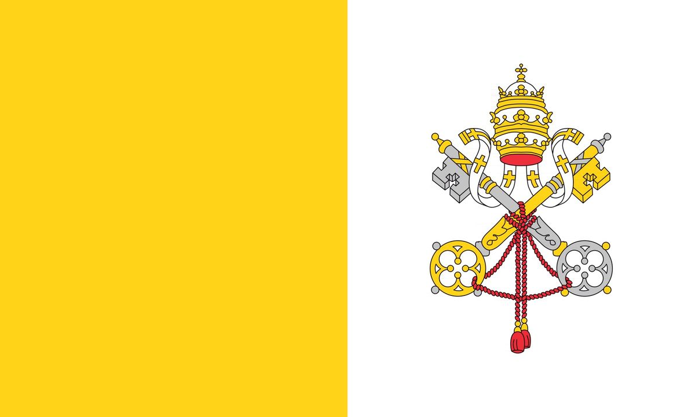
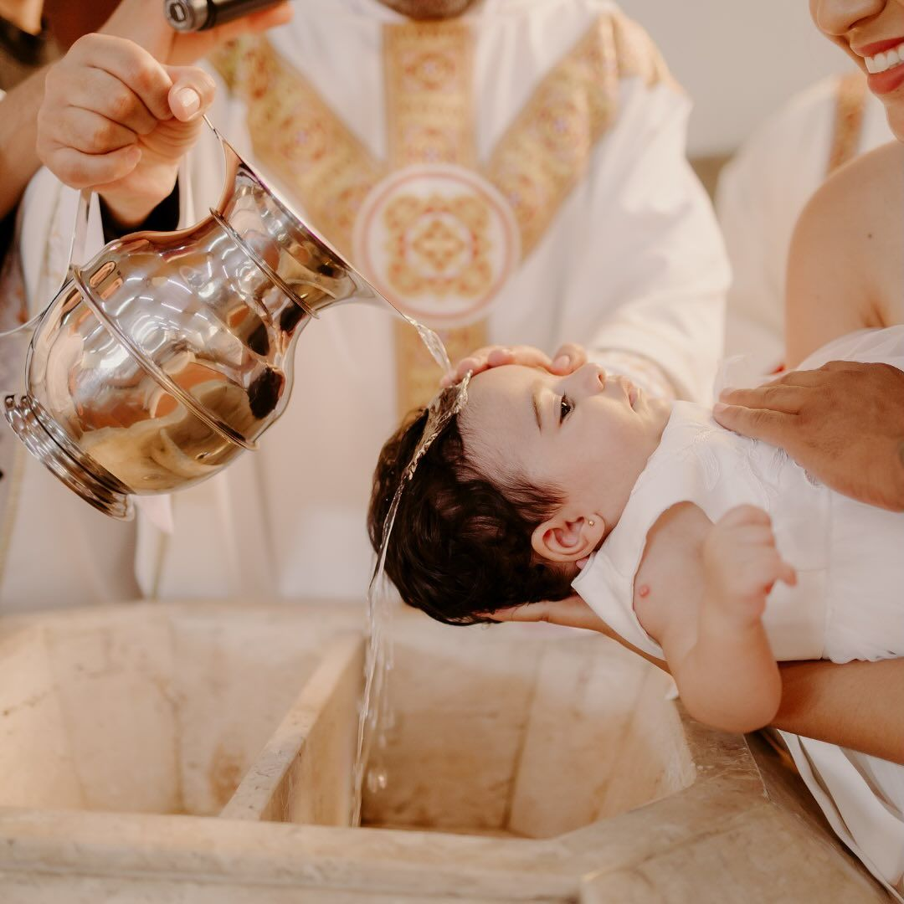
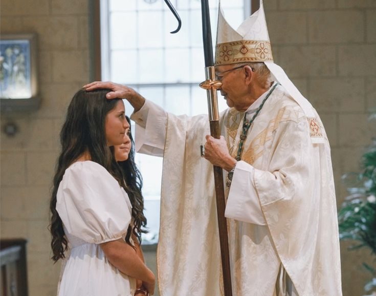
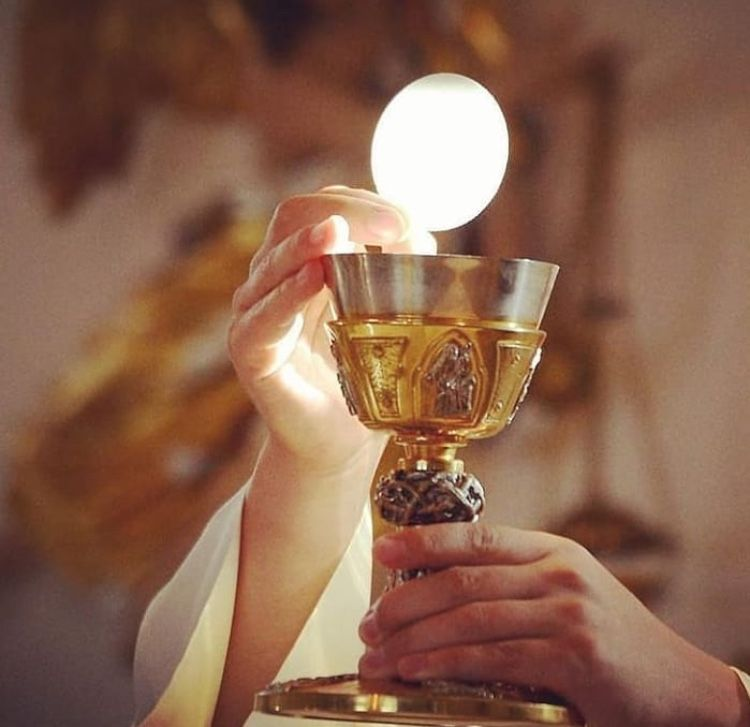
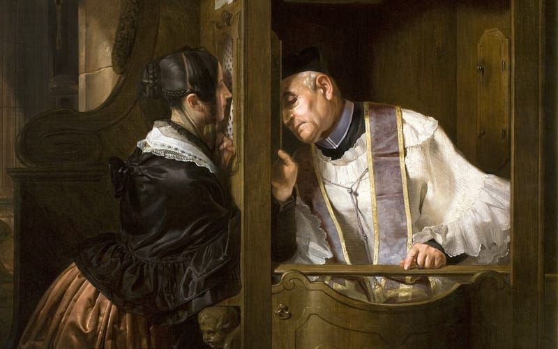
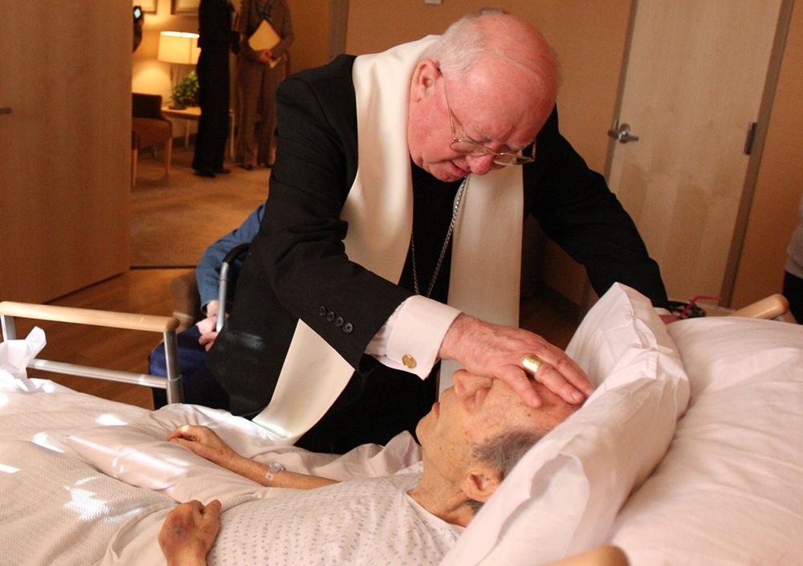
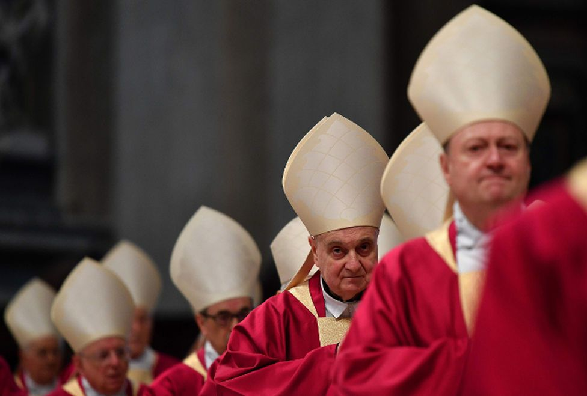
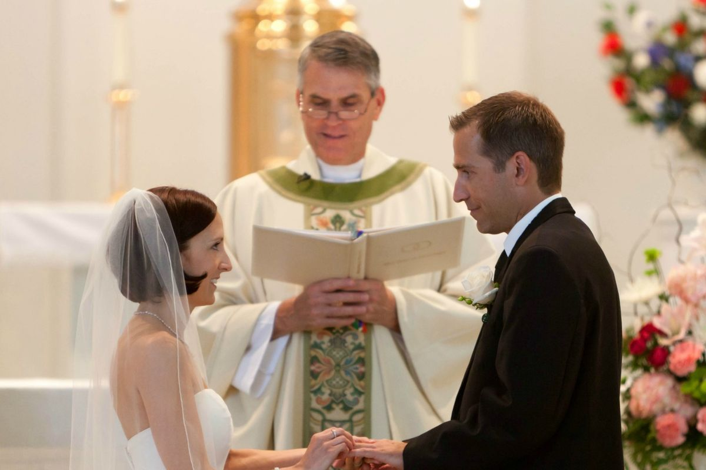

1
2
3



In total, there are seven Sacraments, all of them being instituded by Jesus Christ, our Lord and Savior. They are separated in three categories - Christian Initiation, Healing and Service of Communion and Misson.
The Initiation Sacraments lay the foundation of every Christian Life. They introduce believers into the life of Christ and the Church, moving them from spiritual birth to full maturity. The order is: Baptism, Confirmation and Eucharist.
Even after being introduce more intimately into Christian life with the Sacraments of Christian Initiation, we are still vulnerable of being wounded by sin and ilness. Those wounds require two distinct kinds of healing, which is way Our Lord instituted the Confession Sacrament and the Anointing of the sick Sacrament.
Finally, we have the Sacramets of Service. Christian life is not only about receiving grace, but about being sent to serve others. Holy Orders serves the two millenial Church, continuing the apostolic mission. Matrimony serves by building the family - the domestic church.
In summary, that is it. If you want to learn more about each one of the Sacraments, you can click on the image. You will be redirected to a page that will contain everything you need to know. God bless you!